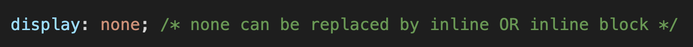
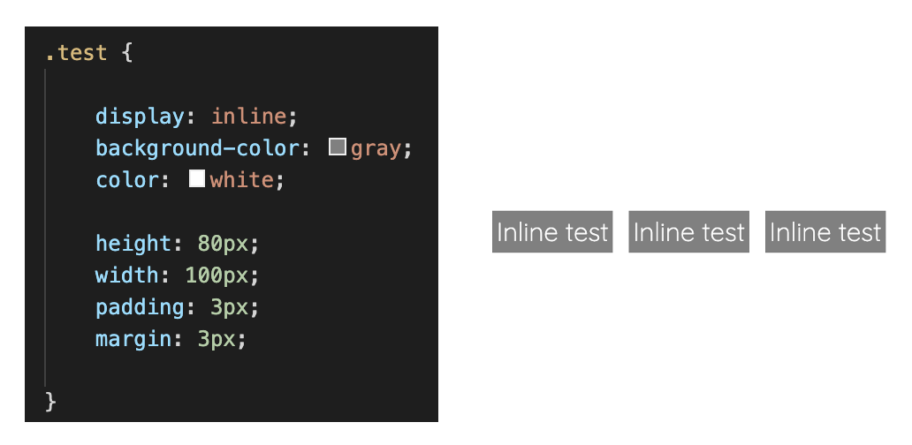
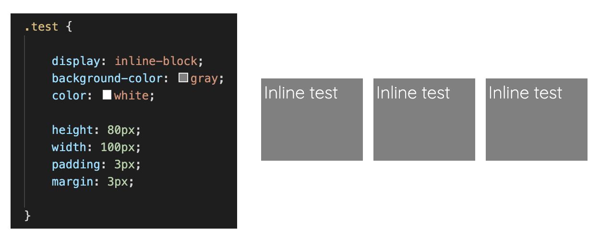

Before we get into what an inline and inline block is, we have to understand that CSS uses the box model to style a webpage. This means that what you see on a webpage comes in rectangular boxes. Inside the box we have an HTML element and surrounding it is the CSS. To read more about what a box model is, click here.
BOX MODEL IMAGE
When working with CSS, the display property determines the behaviour of how the element is displayed.
Syntax:

So what is the difference between a display inline and inline block?
When using display: inline, it displays the element on the same line. This means it only takes up a line and does not wrap around to the next. It takes up as much width as necessary. Heigh and width properties have no affect even if it has been added in.
Commonly used elements that have a default inline feature includes span, a, img, em and strong
Inline code example and output:

When using a display: inline-block, it also displays the element on the same line. However, you CAN set the width and height of the element. The bottom and top of the margin/padding can also be altered. This displays the element in a block container.
Inline block code example and output:

Sources:
Samantha Ming
CodeSource